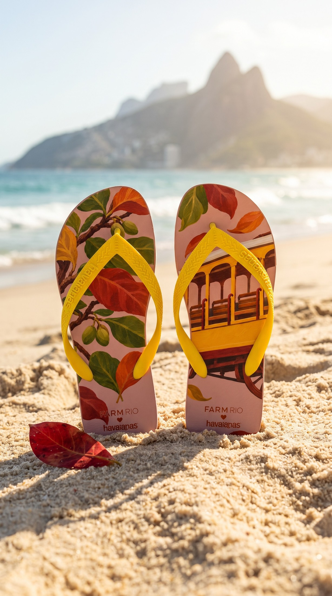
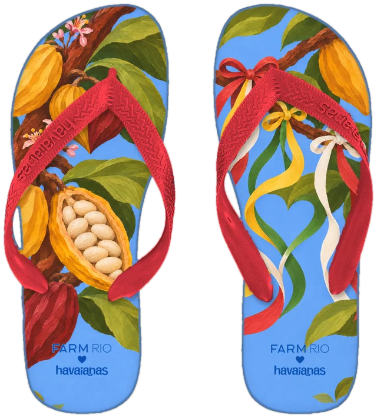
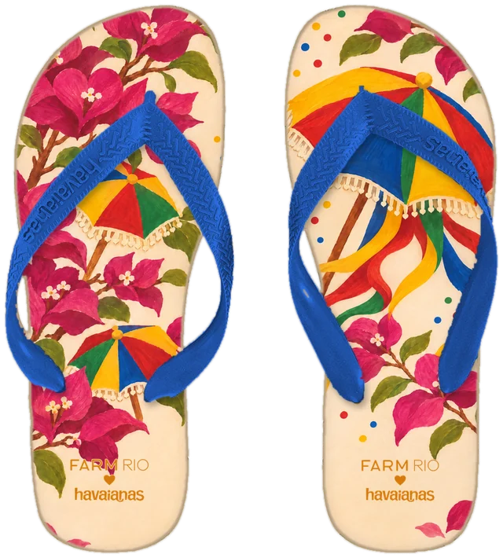
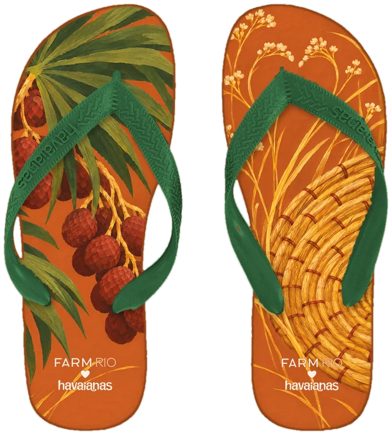
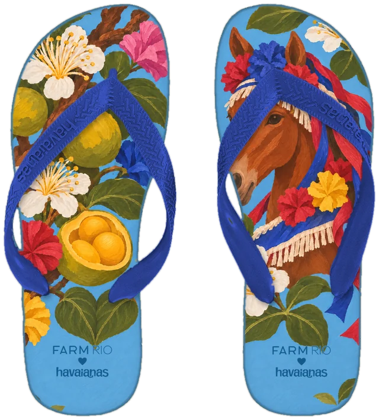

tem um coração
escondido aqui.
pausa e procura
Parádois pássaros de miriti que voam um para o outro
e aqui?
procura
Santa Catarinaa cauda da baleia-franca na enseada de Garopaba
e no Rio?
procura
Rio de Janeiroduas folhas de amendoeira caindo juntas, ao lado do bonde

e cada estampa
vira um par.
Bahia
Mato Grosso do Sul
Paraná
Goiás
Rio Grande do Sul
Ceará
Maranhão
onde está?Minas Gerais
onde está?Pernambuco
onde está?Amazonas
onde está?Tocantins











14 estados, 14 pares,
14 corações.
achou
todos?
Bem-Querer
uma V2 conceitual da collab

o projeto inteiro está no link da bio
projeto conceitual de portfólio de Emilly Silva
sem vínculo com FARM Rio e havaianas
agora,
mais rápido.
esses 4
ficam com você.
corações achados012345678910/14